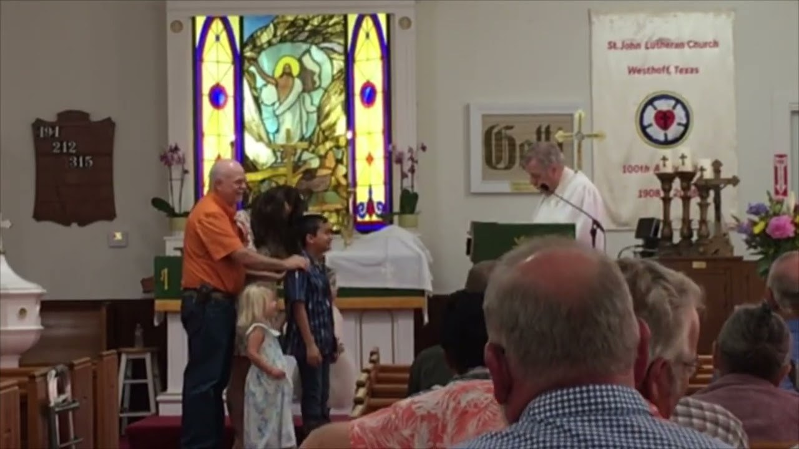
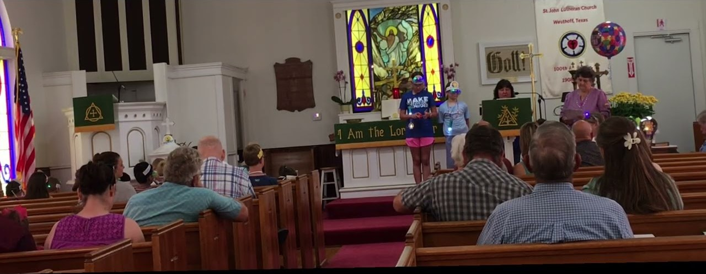
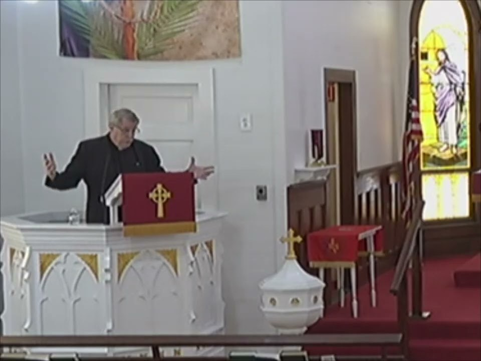
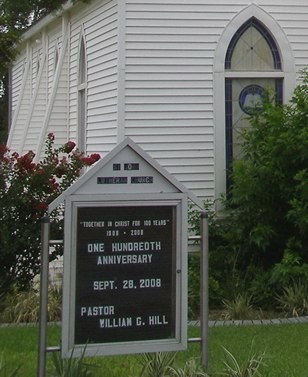
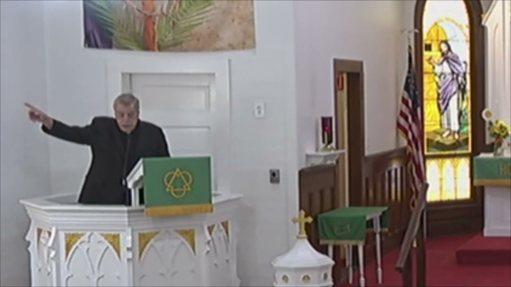
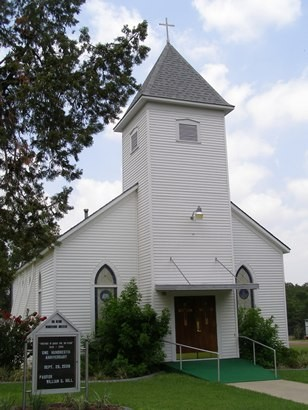

Around the Church
Scenes from St. John Westhoff






156 Cook Avenue · Westhoff, Texas 77994 · Sunday Worship 10:30 a.m.
St. John Lutheran Church was founded on March 29, 1908 in Westhoff by five members and the Rev. J.F. Christiansen. The birthplace of the church — and its first services — was a dance hall. Other early services were held in saloons and under an oak tree.
Without a cent in hand, the little congregation resolved to build a simple church, and a four-board-walled sanctuary was dedicated that November. The tower and bell followed in 1914, and by 1916 the interior was finished along with a sixteen-foot addition. Through fires, droughts, and changing times, the congregation on Cook Avenue has never stopped gathering.
Westhoff itself grew up alongside the railroad that came through from Cuero in 1906, and St. John remains one of the town’s enduring landmarks on U.S. Highway 87, fourteen miles from Cuero in far northwestern DeWitt County.

The historic sanctuary on Cook Avenue, dedicated in 1908
During its first century, St. John Westhoff baptized, confirmed, married, and buried generations of DeWitt County families.
Founded March 29 by five members and Rev. J.F. Christiansen; first sanctuary dedicated in November.
The tower and bell are dedicated.
Church interior finished, with a sixteen-foot addition.
The congregation purchases its first parsonage.
The Parish Hall is built.
Westhoff and Lindenau begin sharing pastors and ministerial resources — two churches, one ministry.
A new parsonage is purchased.
Renovations completed as the congregation celebrates its 100th anniversary.
A new Parish Hall is built for fellowship and community events.
| Sunday Worship | 10:30 a.m. |
| Holy Communion | 1st Sunday |
| Women’s Group | 2nd Wednesday |
| Church Council | 2nd Tuesday |
| Lenten Services | Observed each spring |
| Christmas Eve | Candlelight Service |
Beyond weekly worship, the congregation gathers for the Easter sunrise breakfast, the annual Plant Schwap, special singing, and dinners honoring new members, graduates, and senior citizens. Join us for Sunday worship or any of our special events!
“I was glad when they said unto me, Let us go into the house of the Lord.”Psalm 122:1





Westhoff sits on U.S. Highway 87 near the Gonzales County line, fourteen miles northwest of Cuero. The church is just off the highway on Cook Avenue — look for the white steeple.